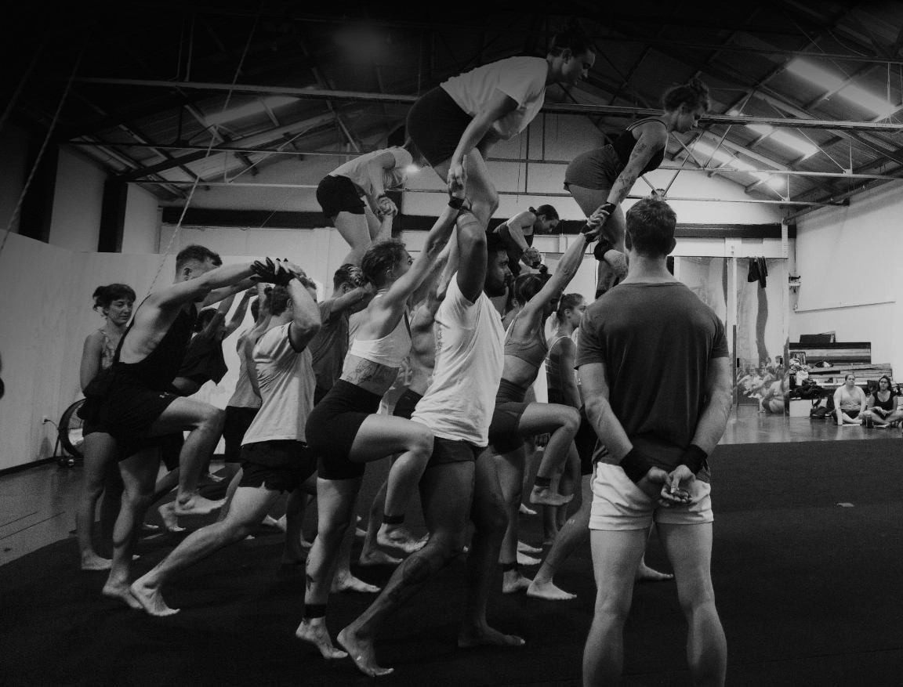

Learning the Freerange way
Online
In person
After a long career with a focus on my own skill development in acrobatics, performing and choreographing and only having teaching as a side-focus, I've recently made passing on my knowledge and assisting other people my main aim. I love teaching in person in and around Tasmania but I've also been enjoying connecting with people all around the world via technology.
I think I have something useful to offer all skill levels and backgrounds.
I frequently teach floor acrobatics, aerial straps and group acrobatics - primarily toss the girl and tower work.
As a student you'll get a program specifically tailored to you. The programming is generally sold in 4+ week blocks or per program. You will get access to a private library with exclusive videos, where I explain different concepts and show you tricks and progressions for achieving them. You can ask me questions, send me videos and message me anytime. Most communication will be through WhatsApp or Signal.
If you're interested in coaching, either in person or online, you can contact me at lewiewest@gmail.com or leave me a message on Instagram @lewie.west. Below are a few words from some of my students:
Testimonials
Florian, Acrobat from Germany (web: flosh.in)
Lewie inspired me to start acrobatics as an adult.
Just skateboarding throughout my childhood and youth, inspired by freestyle and in particular by Rodney Mullen, I stumbled upon Lewies work on YouTube in about 2009 and was totally flashed. And I came to like him even more when I heard him saying in an interview that he approached acrobatics inspired by skateboarding.
A few years later I joined an acrobatic gymnastics club "by accident" and soon I found my passion in mixed pair hand to hand. I followed Lewies work sporadically throughout the years and in 2020, shortly after some great crisis in my life, I heard that Lewie started coaching. I didn't hesitate a second and got the opportunity to learn from the master himself. Lewie, for me, is like the Rodney Mullen of freestylerange acrobatics.
In the beginning of 2022 I made this little website here, as a gift for and a testimony of his continuing inspiration and teaching. I am very glad he accepted the offer. Being teached by him over ten years later and making this website for him is like a circle closing for me and at the same time the opening of new possibilities.
Christophe Bétournay
They say to never meet your heroes, but I'm so glad I did. I discovered Lewie's YouTube channel a couple years back at a very tough time for me. I couldn't believe how someone could have control over their body like that. I watched all of his videos. Over and over again. and it ignited something in me. It gave me the spark to pursue the quest of mastering my own body.
I first reached out to him at the beginning of the pandemic. I was stuck at home and was training in my backyard all day long, but I hit a wall. I had no equipment and I was terrified of acrobatics. I sent him a direct message thinking that in the worst case he just wouldn't reply. Not only did he reply, but he offered me a FaceTime to answer all of my questions. The call was about an hour long and at the end of which he offered to help me out and review my videos whenever I needed help. After a couple reviews like that, I asked if online classes could be a thing. We did a couple and then he came up with a new system. An awesome one at that.
Freerange has been incredible. It's been so fun to see the method behind the legend. To see how he thinks about acrobatics and how he breaks down skills into bite size progressions. He also adapts really well with each individual. It doesn't feel like you're doing a "program". It's more like a "collaboration" between a teacher and a student. Some things are part of the curriculum, but he filmed tutorials exclusively because I had specific moves in mind. I really wanted to be able to do some of his signature moves. But the best gift he gave me was to help me realise that all bodies move differently and that the real goal is to find out how yours moves. Like in breakdance: style is king!
Needless to say, I highly recommend Freerange for anyone who is interested in finding out how to be comfortable in their bodies.
Harry Williams
As someone who also teaches within the industry, I've been very impressed by Lewie's ability to break down detailed subjects and new concepts into very digestible and entertaining pieces. Before training under Lewie most my acrobatics have been self governed which has lead me to large imbalances in my abilities, Lewie quickly identified and addressed this helping me to develop in the areas of acrobatics I wasn't as originally drawn too and helped me find a new love for all the components of this (intimidating at times) practice.
He has been quick to respond when I have questions, happy to explain to me deeper than the black and white rights and wrongs of each movement and has been very accommodating whenever issues have emerged throughout our time together. I can highly recommend Lewie as an excellent instructor for anyone of any experience wanting to learn acrobatics online or in person.
Mike Kitchell
Working with Lewie has been instrumentally helpful in my development as an acrobat -- in addition to being able to break down complex movement patterns simply, he has great insight into acrobatic concepts that carry across the board. I've learned a great number of movements from him, but the way he explains acclimating the body in order to turn a straight line into a curve has had such a rewarding carry-through of my overall practice that I can't imagine where I'd be without this understanding. I highly recommend working with Lewie if you're interested in a more well-rounded & highly developed acrobatic practice!